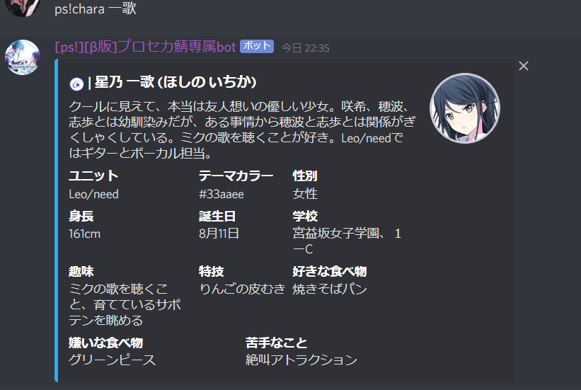
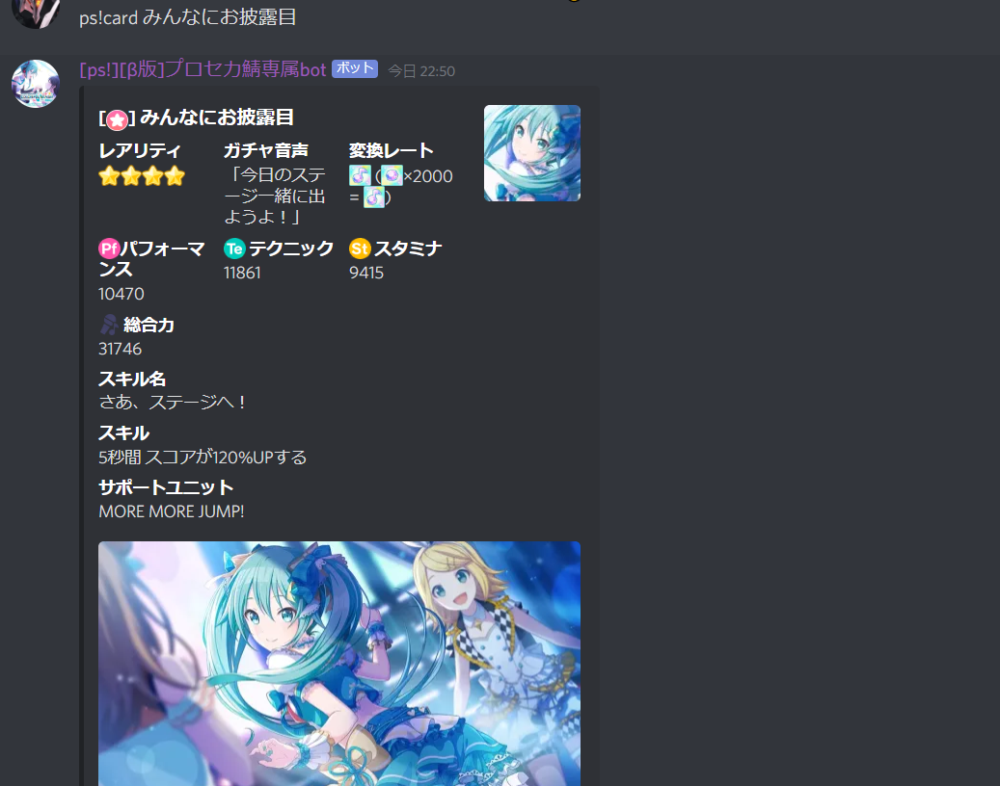
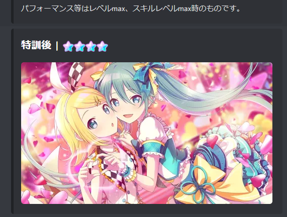
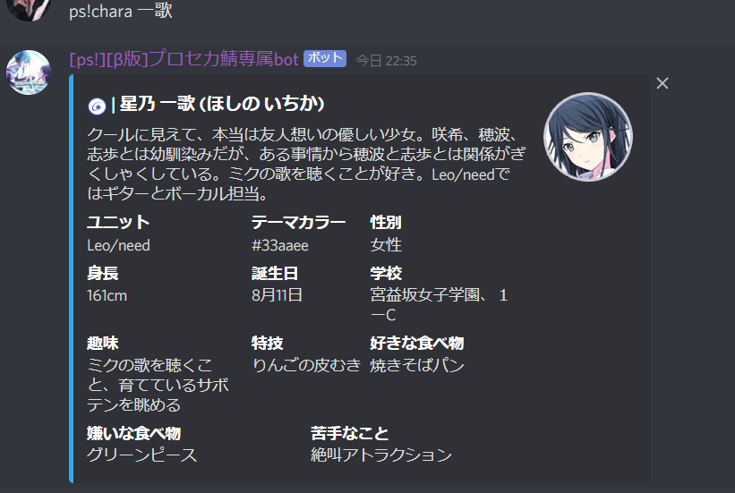
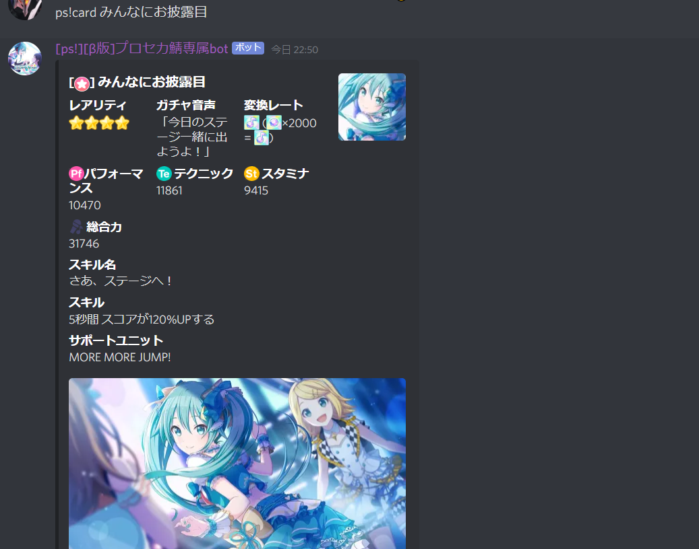
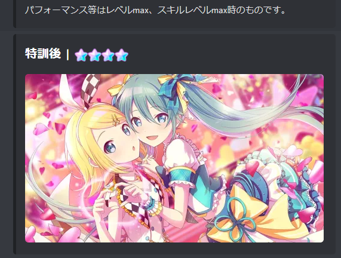

Botサーバー専属bot
コマンド一覧
| ps!chara [プロセカのキャラクター名] |  |
|---|---|
| ps!card [プロセカのカード名 or キャラクター名から検索] |  |
| 3. にぎやかにしましょう | |
| 4. リーク情報の掲載は #📡-リーク情報 チャンネル以外では禁止 | |
| 5. 他の方に迷惑になることはここにかいてないことでもやめましょう |
| ps!chara [プロセカのキャラクター名] |  |
|---|---|
| ps!card [プロセカのカード名 or キャラクター名から検索] |  |
| 3. にぎやかにしましょう | |
| 4. リーク情報の掲載は #📡-リーク情報 チャンネル以外では禁止 | |
| 5. 他の方に迷惑になることはここにかいてないことでもやめましょう |